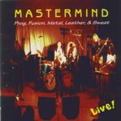

| Artist: | Mastermind |
| Title: | Prog, Fusion, Metal, Leather And Sweat |
| Label: | Stellarvox SV2001-2 |
| Length(s): | 80 minutes |
| Year(s) of release: | 2000 |
| Month of review: | 08/2000 |
| 1) | On The Road By Noon | 6.29 |
| 2) | The Approaching Storm | 7.30 |
| 3) | Tokyo Rain | 7.06 |
| 4) | The End Of The World | 10.45 |
| 5) | Sudden Impulse | 5.22 |
| 6) | Decide For Yourself | 6.23 |
| 7) | A Million Miles Away | 6.46 |
| 8) | Sky Dancer | 5.40 |
| 9) | When The Walls Fell | 13.55 |
| 10) | Jubilee (encore) | 9.51 |